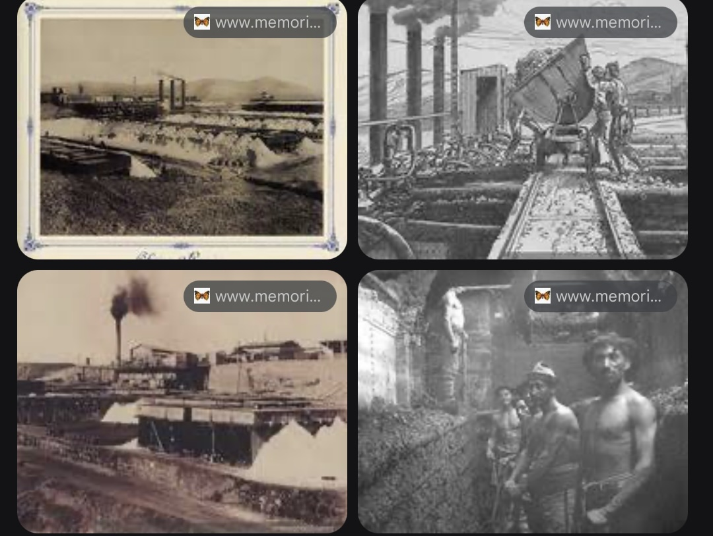

10. Herramientas de IA Generativa#
10.1. Introducción: El ecosistema de IA para estudiantes#
Imagina que tienes varios asistentes de estudio, cada uno con habilidades diferentes:
Uno es excelente explicando conceptos.
Otro es genial revisando tus textos.
Otro encuentra información rápidamente.
Otro te ayuda con matemáticas.
Así funcionan las diferentes herramientas de IA. No hay una “mejor”, sino que cada una tiene fortalezas específicas.
10.2. ChatGPT, Claude, Gemini, Grok, DeepSeek, Perplexity… ¿Cuándo usar cada uno?#
10.2.1. ChatGPT#
Desarrollado por: OpenAI.
Lanzamiento: Noviembre 2022.
Costo: Versión gratuita y ChatGPT Plus ($20/mes).
Fortalezas:
Explicaciones didácticas: Simplifica conceptos complicados.
Creatividad: Genera ideas y enfoques novedosos.
Versatilidad: Funciona bien en muchas áreas diferentes.
Conversación natural: Se siente como hablar con un tutor.
Limitaciones:
Alucina: Puede inventar fechas y datos (¡siempre verifica!).
A veces confunde eventos históricos similares.
No siempre tiene acceso a internet (solo en versión paga).
Puede ser muy seguro de sí mismo incluso cuando se equivoca,
10.2.1.1. Ejemplos prácticos en Historia:#
Ejemplo 1: Entender conceptos complejos
a) Estudiante: “No entiendo qué fue la Junta de Gobierno del 18 de septiembre de 1810. ¿Me lo puedes explicar como si tuviera 15 años?”
b) ChatGPT: Claro 🙂, te lo explico de forma simple, como para alguien de 15 años:
En 1810, Chile no era un país independiente: dependía de España y obedecía al rey español. El problema fue que, en ese momento, el rey de España estaba preso por Napoleón (un emperador francés), así que en Chile surgió la pregunta:
👉 ¿Quién manda ahora? Para evitar el desorden, un grupo de personas importantes de Chile decidió crear un gobierno propio, pero provisional. Así nació la Primera Junta de Gobierno, el 18 de septiembre de 1810. ¿Qué era la Junta de Gobierno? Era como un grupo de autoridades chilenas que se organizó para: Gobernar mientras el rey no podía hacerlo. Mantener el orden en el territorio. Tomar decisiones importantes sin depender directamente de España.
¿Chile se hizo independiente ese día? ❌ No inmediatamente. Al principio, la Junta decía que gobernaba en nombre del rey, pero en la práctica fue el primer paso hacia la Independencia, porque: Por primera vez, los chilenos se gobernaban a sí mismos. Se abrió el camino para decidir el futuro del país.
¿Por qué es tan importante? Porque el 18 de septiembre de 1810 marca el inicio del proceso de Independencia de Chile, aunque la independencia oficial se declaró años después (en 1818).
Si quieres, puedo ayudarte a resumirlo en 3 líneas, explicarlo con un ejemplo actual, o dejar una respuesta tipo prueba.
Ejemplo 2: Generar ideas para proyectos
a) Estudiante: “Necesito hacer un trabajo sobre los gobiernos radicales.Dame 5 enfoques creativos que no sean los típicos”
b) ChatGPT: Perfecto 👍. Aquí tienes 5 enfoques creativos sobre los gobiernos radicales en Chile (1938–1952), pensados para que tu trabajo sea original y no el típico resumen histórico:
Los gobiernos radicales como “ingenieros sociales”. En vez de contar solo hechos, analiza cómo intentaron “diseñar” una nueva sociedad:Educación pública y técnica, Estado docente, Expansión de la clase media, Rol del Estado en la vida cotidiana. 👉 Enfoque: ¿Hasta qué punto el Estado puede moldear una sociedad?
Chile pasa de país agrícola a país industrial (aunque a medias). Estudia los gobiernos radicales como un intento de cambiar el modelo económico: Creación de la CORFO, Industrialización por sustitución de importaciones, Respuesta al terremoto de 1939. 👉 Enfoque: Un país que quiso dejar de depender de afuera.
**El radicalismo visto desde los jóvenes y estudiantes ¿Cómo cambiaron las oportunidades para: Estudiantes, Profesores, Técnicos y profesionales? 👉 Enfoque: Qué futuro ofrecían los gobiernos radicales a un joven de la época. Puedes escribirlo como si fueras un estudiante en 1942.
Gobiernos radicales: entre la democracia y el miedo. Analiza las contradicciones: Defensa de la democracia,Alianzas políticas complejas,Ley de Defensa Permanente de la Democracia (Ley Maldita). 👉 Enfoque: Gobiernos que ampliaron derechos, pero también los limitaron.
¿Y si no hubieran existido los gobiernos radicales? Un trabajo contrafactual: ¿Habría existido la CORFO?,¿La educación técnica se habría expandido igual?, ¿La clase media habría crecido? 👉 Enfoque: Pensar la historia como un camino que pudo ser distinto.
💡 Tip para destacar aún más Puedes presentar el trabajo como:
Diario personal
Podcast escrito
Entrevista ficticia
Debate entre dos historiadores Si quieres, dime: nivel del curso, formato (escrito, exposición, video) y te ayudo a armar la estructura completa del trabajo 📚✨
Ejemplo 3: Practicar para pruebass
a) Estudiante: “Hazme 2 preguntas de opción múltiple sobre la Guerra del Pacífico para practicars”
b) ChatGPT: ¡Claro! Aquí tienes 2 preguntas de opción múltiple sobre la Guerra del Pacífico, ideales para practicar. Al final te dejo el gabarito 👇
¿Entre qué años se desarrolló la Guerra del Pacífico?
A) 1866–1870
B) 1879–1883
C) 1881–1886
D) 1890–1895
¿Qué países participaron directamente en la Guerra del Pacífico?
A) Chile, Perú y Argentina
B) Chile, Bolivia y Perú
C) Chile, Bolivia y Brasil
D) Chile, Perú y Ecuador
✅ Úsalo para:
Entender conceptos que no captaste en clase.
Generar ideas para trabajos y proyectos.
Practicar con preguntas de ejemplo.
Primeros borradores de estructura de ensayos.
❌ NO lo uses para:
Obtener fechas exactas sin verificar.
Datos estadísticos precisos.
Como única fuente de información.
Escribir trabajos completos (¡es plagio!).
10.2.2. Claude#
Desarrollado por: Anthropic.
Lanzamiento: 2023.
Costo: Versión gratuita y Claude Pro ($20/mes)
Fortalezas:
Análisis profundo: Excelente para revisar argumentos complejos.
Contexto extenso: Puede leer documentos muy largos.
Precisión: Más cuidadoso con los datos históricos.
Rigor académico: Considera múltiples perspectivas.
Limitaciones:
A veces es demasiado cauteloso.
No tiene acceso directo a internet.
Puede ser muy formal en su lenguaje.
No siempre da respuestas directas.
10.2.2.1. Ejemplos prácticos en Historia:#
Ejemplo 1: Análisis de fuentes primarias
a)Estudiante: “Tengo que analizar esta carta de Diego Portales a Cea:¿Qué puedo decir sobre el contexto histórico y la intención del autor?”
b) Claude: [Análisis detallado considerando múltiples aspectos]
Ejemplo 2: Revisión de ensayos
a) Estudiante: “Escribí este ensayo sobre las causas de la Guerra Civil de 1891: ¿Mi argumento es sólido? ¿Qué puedo mejorar?”
b) Claude: Revisa estructura, argumentos, evidencia
Ejemplo 3: Comparación historiográfica.
a) Estudiante: “¿Cómo han cambiado las interpretaciones sobre el gobierno de Salvador Allende desde 1973 hasta hoy?”
b) Claude: [Explica diferentes escuelas historiográficas]
✅ Úsalo para:
Revisar ensayos antes de entregarlos.
Analizar fuentes primarias.
Entender debates historiográficos.
Desarrollar argumentos complejos.
Programar.
❌ NO lo uses para:
Buscar información muy actualizada.
Datos en tiempo real.
Tareas simples que ChatGPT hace mejor.
Como única fuente.
10.2.2.2. Gemini#
Desarrollado por: Google.
Lanzamiento: 2023.
Costo: Versión gratuita incluida con Google.
Fortalezas:
Acceso a internet: Busca información actualizada.
Integración Google: Conecta con Maps, Scholar, etc.
Verificación de datos: Contrasta múltiples fuentes.
Multimodal: Trabaja con imágenes y texto.
Limitaciones:
Prefiere fuentes en inglés.
A veces da demasiada información.
No siempre es tan conversacional como ChatGPT.
Puede privilegiar resultados de Google.
10.2.2.3. Ejemplos prácticos en Historia:#
Ejemplo 1: Verificación de datos
a) Estudiante: “¿En qué año exactamente fue la Batalla de Maipú? ¿Y dónde queda ese lugar hoy?”
b) Gemini:
📅 Fecha de la Batalla de Maipú: La Batalla de Maipú tuvo lugar el 5 de abril de 1818. Fue un enfrentamiento decisivo entre el Ejército Unido Libertador de Chile (liderado por José de San Martín) y el Ejército Real de Chile del Imperio Español (liderado por Mariano Osorio), que selló la independencia definitiva de Chile.
🗺️ Ubicación Actual: El lugar de la batalla, conocido históricamente como los Llanos de Maipú o la Hacienda de Lo Espejo, se encuentra actualmente en el sector suroeste de la capital chilena.
Comuna: Se ubica en lo que hoy es principalmente la comuna de Maipú, en la Región Metropolitana de Santiago, Chile.
Puntos de Referencia: El campo de batalla se extendía por una zona que hoy incluye parte de la comuna de Cerrillos y áreas aledañas en el sector poniente de la ciudad.
Monumentos: En la comuna de Maipú, el lugar es conmemorado por el Templo Votivo de Maipú (o Santuario Nacional de Maipú) y otros monumentos como el Cerro Primo de Rivera y el Parque Monumento a la Batalla de Maipú.
¿Te gustaría saber más sobre quiénes fueron los líderes clave en esta batalla o cuáles fueron las principales consecuencias de la victoria patriota?
Ejemplo 2: Búsqueda de fuentes
a) Estudiante: “Busca imágenes históricas de la época del salitre en Chile (1880-1930)”
b) Gemini:

Ejemplo 3: Información actualizada
a) Estudiante: “¿Cuáles son los descubrimientos arqueológicos más recientes sobre los incas en Chile?”
b) Gemini:
Los descubrimientos arqueológicos sobre la Los descubrimientos arqueológicos recientes sobre la presencia inca en Chile se centran en dos áreas principales: la reevaluación de la capital incaica en el Valle del Mapocho (actual Santiago) y el hallazgo de sitios ceremoniales de altura.
Aquí están algunos de los hallazgos e investigaciones más destacados de los últimos años:
El Centro Ceremonial del Volcán Maipo
Hallazgo: Un descubrimiento anunciado en marzo de 2022 por investigadores de Chile y Argentina posiciona al Volcán Maipo como un posible centro ceremonial inca de gran importancia, ubicado a más de 4.000 m s. n. m.
Significado: Se encontraron estructuras pircadas (muros de piedra) y otros vestigios que sugieren que el volcán fue un importante punto de encuentro y peregrinaje en el extremo sur del imperio incaico (Tawantinsuyu). Esto confirma la extensión y el profundo carácter ritual de la presencia inca en la cordillera andina central.
Evidencia de un Gran Centro Urbano Inca en Santiago (Valle del Mapocho)
Investigación Continua: Aunque el concepto de un asentamiento inca bajo Santiago no es nuevo (arqueólogos como Rubén Stehberg lo han propuesto por décadas), las excavaciones recientes, muchas de ellas fortuitas debido a obras de infraestructura (como las del Metro de Santiago), siguen aportando evidencia crucial.
Puntos clave:
Sustrato Incaico: Se sigue acumulando evidencia que sugiere que el damero fundacional de Santiago (la Plaza de Armas y sus alrededores) se superpuso a un centro administrativo inca preexistente, con edificios públicos y la plaza central en la misma ubicación.
Hallazgos en Obras: Las excavaciones para las nuevas líneas del Metro han revelado miles de fragmentos cerámicos, líticos y, en algunos casos, restos humanos y funerarios, incluyendo vasijas cerámicas de estilo Aconcagua-Inca en profundidades que confirman una ocupación prehispánica de alta densidad en el sector.
El Sistema de Caminos (Qhapaq Ñan) y sus Asociaciones
Énfasis en la Conexión: Las investigaciones recientes no se centran solo en los sitios aislados (como los Pucaráes de Chena o La Compañía), sino en la extensión y ramificaciones del Qhapaq Ñan (Camino del Inca) en Chile.
Descubrimientos: Se han identificado y puesto en valor nuevos tramos y estructuras asociadas al camino, como tambos (posadas) y chasquiwasis (casas de mensajeros), que demuestran la sofisticada red logística y administrativa que el imperio utilizaba para controlar su provincia austral.
En resumen, los hallazgos recientes refuerzan la idea de que la presencia incaica en Chile, especialmente en la zona central, fue mucho más que una simple frontera, sino que constituyó un centro administrativo y ceremonial complejo que fue clave en la subsiguiente fundación de la ciudad de Santiago por los españoles.
¿Le gustaría que profundicemos en algún sitio en particular, como el Pucará de Chena o el Cerro El Plomo?
✅ Úsalo para:
Verificar fechas y datos básicos.
Buscar material multimedia (imágenes, videos).
Encontrar fuentes complementarias.
Información actualizada.
❌ NO lo uses para:
Análisis profundos y complejos.
Interpretaciones historiográficas.
Como única fuente académica.
Temas muy específicos sin fuentes online.
IA Generativa
10.2.2.4. Caso Práctico Completo: Investigación sobre la Guerra del Pacífico
#
Imagina que debes hacer un ensayo sobre “El impacto económico de la Guerra del Pacífico en Chile”. Aqui te presento una propuesta para usar las distintas herramientas:
Paso 1: Comprensión inicial (ChatGPT)
“No entiendo bien qué fue la Guerra del Pacífico. ¿Me puedes explicar las causas principales y qué países participaron?”Paso 2: Investigación con fuentes (Perplexity)
“¿Cuáles son los estudios académicos más importantes sobre el impacto económico de la Guerra del Pacífico en Chile? Dame fuentes específicas”Paso 3: Verificación de datos (Gemini). Verifica estas fechas:
a) Inicio de la guerra: 1879 b) Combate Naval de Iquique: 21 mayo 1879 c) Fin de la guerra: 1883”Paso 4: Análisis de datos (DeepSeek)
“Estos son los datos de exportación de salitre chileno antes y después de la guerra: ¿Qué conclusiones puedes sacar?”Paso 5: Estructura del ensayo (ChatGPT)
“Quiero escribir sobre el impacto económico de la Guerra del Pacífico. ¿Me ayudas a estructurar el ensayo en 4 secciones?”Paso 6: Revisión final (Claude)
“Escribí este ensayo sobre el impacto económico de la Guerra del Pacífico: [pega tu ensayo] ¿Mi argumento es sólido? ¿Qué puedo mejorar?”Paso 7: Contexto actual (Grok) [Opcional]
“¿Cómo se relaciona el impacto de la Guerra del Pacífico con debates económicos actuales en Chile?”
⚠️ ADVERTENCIAS IMPORTANTE: Estas plaatfortmas púeden equivocarse por lo cual, no dudes en recurrir a fuentes escritas para verificar:
Fechas exactas
Nombres de personas
Datos estadísticos
Citas textuales.